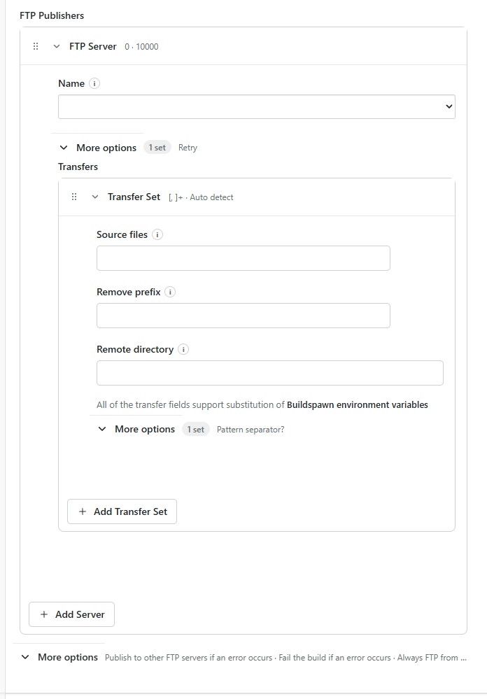

FTP Upload
Copies files to an FTP or FTPS server, with include patterns. Use FTPS: plain FTP sends passwords unprotected.
In the step picker this is called Send files over FTP.
When to use it
Use it to hand builds to a partner or a platform holder's drop server that only offers FTP.
How to set it up
- Open the build configuration and click Settings › Build Steps.
- Click Add build step. Type
FTP Uploadin Filter step types if you like, then click the FTP Upload tile (group Upload and deploy). - Type a Step name, for example
Send patch. - Fill in the fields described below.
- Optional: set Execute step, Conditions and Retry on failure. See The steps list and the step editor.
- Click Save.

Every field
| Field | What it does | Default | Example |
|---|---|---|---|
| Name (FTP Server) | The server to use, from the servers defined once under Settings › System. | First server | partner-drop |
| Verbose output in console, Retry, Label, Fail the build if an error occurs | As in SSH Upload. | ||
| Source files | Files to upload: comma-separated Ant includes, base folder is the workspace. | Empty | Builds/Patch/** |
| Remove prefix | The first part of the path that is not created on the server. | Empty | Builds/Patch |
| Remote directory | Optional destination folder, below the one in the server settings. Created if missing. | Empty | /patches/1.4 |
| Exclude files (More options) | Comma-separated Ant excludes. | Empty | **/*.pdb |
| Pattern separator (More options) | Regular expression that splits the patterns. | [, ]+ | , |
| No default excludes, Make empty dirs, Flatten files, Remote directory is a date format (More options) | As in SSH Upload. | Off |
A worked example
Send the patch files to the partner. Step name Send patch, Name partner-drop, Source files Builds/Patch/**, Remove prefix Builds/Patch, Remote directory /patches/1.4.
What you see when it runs
The console says it is connecting to the configuration, then Transferred N file(s), then disconnecting.
Problems and fixes
| Problem | What to do |
|---|---|
| The server list is empty | An administrator must add an FTP server under Settings › System. |
| Passwords seen on the network | Use an FTPS server. Plain FTP sends passwords unprotected. |